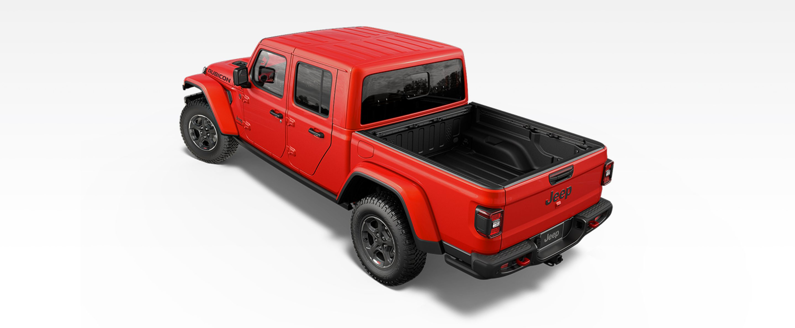

THE GLADIATOR EXTERIOR DOES MORE THAN STAND OUT-IT DEFIES CONVENTION. FROM THE ICONIC LOOK OF THE SEVEN-SLOT GRILLE TO TRANSFORMATIVE OPEN-AIR OPTIONS, IT REDEFINES WHAT'S POSSIBL FOR A PICKUP TRUCK.
Lower the Segment-Exclusive zipperless Sunrider® soft top with easy one-handed operation or pop the removable lightweight panels of the available Freedom Top® hardtop for a true open-air experience. Lightweight aluminum doors can be easily removed for an extra dose of freedom.
Get closer to the wind, dirt, sun or sand. The Segment-Exclusive fold-down windshield can be quickly lowered to deliver the ultimate open-air experience for those who can’t get enough of the outdoors.
With a range of available hardworking features made to secure, protect and organize your gear, this all-steel bed is ready to answer adventure’s call.
Between strong construction and smart thinking, the rugged 5-foot steel box with integrated tie-downs and available spray-in bedliner is more than ready to handle ATVs, a load of wood for that evening fire and other heavy cargo.
Secure your cargo with ease. The available Trail Rail™ Cargo Management System offers adjustable tie-downs that work in tandem with the truck bed cross rails and cargo basket to keep everything in place.
The available roll-up tonneau bed cover offers lots of versatility; lock it in position for secure coverage or roll it up all the way for full bed access.
An available 115-volt power outlet located in the rear of the truck bed allows you to plug in devices like a portable compressor or slow cooker. A switch in the cab of the Gladiator activates the outlet.